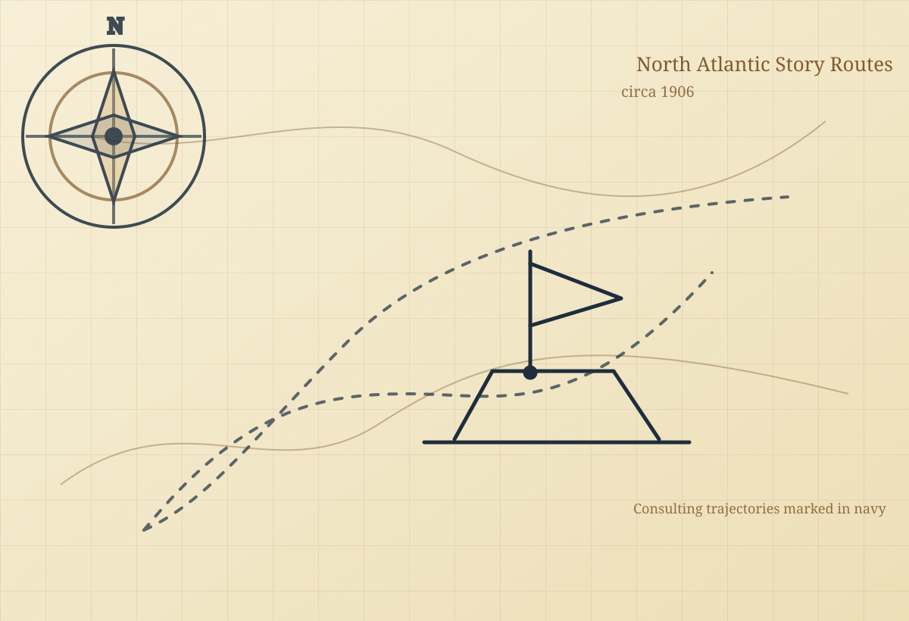

Consulting
1-on-1 narrative strategy for founders, executives, and communicators who need coherent positioning, stronger message architecture, and sharper story decisions.
Start a consulting conversationNarrative Intelligence
Kanishk Gupta | Narrative Intelligence Consultant

1-on-1 narrative strategy for founders, executives, and communicators who need coherent positioning, stronger message architecture, and sharper story decisions.
Start a consulting conversation
Group decoding sessions that help teams identify narrative blind spots, align on strategic storyframes, and build shared language for confident communication.
Bring a workshop to your teamJoin 5,000+ readers decoding the architecture of modern stories.